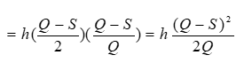
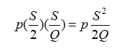
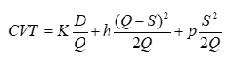
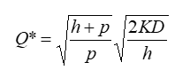
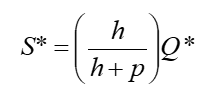

Definición
Hay situaciones donde tiene sentido permitir faltantes planeados limitados desde la perspectiva administrativa, esto es si los clientes pueden y están dispuestos a aceptar un retraso razonable en el surtido de su pedido.
Para poder emplear este método se deben cumplir las siguientes condiciones:
- Una tasa constante de demanda
- La cantidad a ordenar para reabastecer el inventario llega toda junta justo cuando se desea
- Se permiten los faltantes planeados. Cuando ocurren los faltantes, los clientes afectados esperan a que el producto esté disponible de nuevo
Este modelo tiene dos variables de decisión. El objetivo es seleccionar Q y S para
- Minimizar CVT = Costo variable total del inventario por año
CVT = costo inicial por unidad de tiempo + costo de mantener por unidad de tiempo + costo del faltante por unidad de tiempo
Igual que para el modelo básico EOQ
Costo Inicial por unidad de Tiempo = K x (D/Q)
- donde K es el costo de cada preparación para colocar una orden y D es la demanda total por unidad de tiempo. Como sólo se incurre en el costo unitario de mantener anual h por las unidades cuando el nivel de inventario es positivo

Costo de mantener por unidad de tiempo = p x (nivel promedio de faltantes cuando el nivel es positivo

Costo por faltantes por unidad de tiempo = p x (nivel promedio de faltantes cuando ocurre un faltante) x (fracción de tiempo que ocurre el faltante

p = costo por faltantes por unidad de tiempo por unidad que falta
La combinación de estas expresiones da:

Después de realizar derivadas parciales respecto a Q y S, hacer estas derivadas parciales iguales a 0 y luego resolver este sistema de dos ecuaciones con dos incógnitas.
Cantidad del pedido

Faltante del máximo:

- Nivel máximo de inventario = Q* -*S
- Punto de re-orden = -S* + (demanda diaria)(tiempo de entrega)